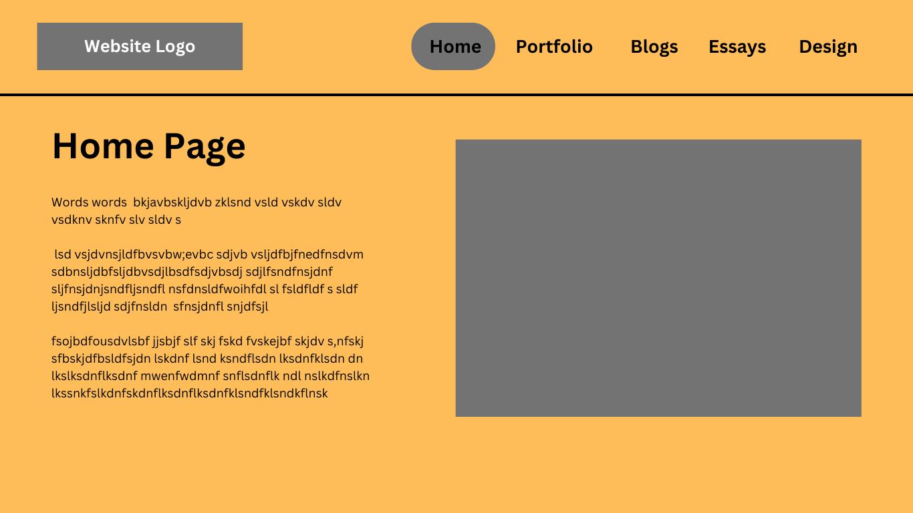
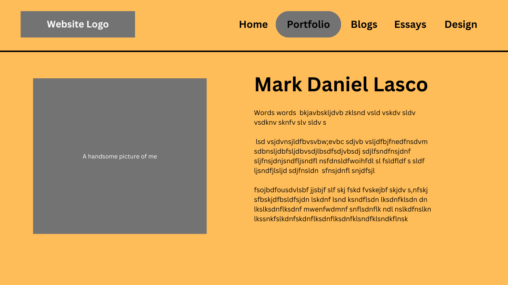
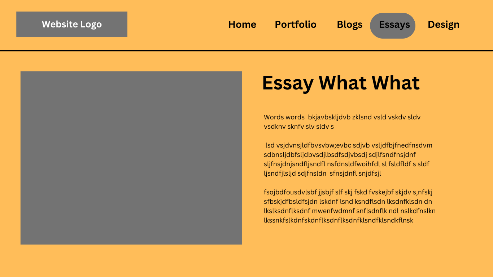

This version was the initial wireframe I developed, it is quite simple, and I liked the side bar as I noticed that it was not as popular among other websites and I wanted my website to be a little bit differnet than the rest.
Here is the second iteration for the web page, the toggle bar or rather the navigation bar is now moved to the top like other websites, this is ideal as the information has more space to be displayed.

The page will display the information in this sort of these two coloumn structure, the page will also use a scroll down feature and display from top to bottom.
This page is a lot more sleek, the page is better organized and presents the information better. In this one I will also use scroll down features and allow the rest of my stuff to be seen from top to bottom.

This page has a lot of more text information, so the information does not require as much space. In this one I do not need that much space, so I will make use of a scroll down feature to present more information.

Here the page uses two coloumns for the blog posts, this way we can allow more information to be presented. While there is more information to be presented, the information may seem a bit clustered and overwhelming.

With the essay page, I would say the same thing in regards to the blog post page, information is mainly text and it had a whole page to display such.
In this iteration the page is a lot more sleek, allowing for space for the images that may be used in the essay.


These are the colours used in the different wireframes, I chose orange for my website because it's full of energy and creativity. It's a color that grabs attention and makes things feel lively. When people visit my site, I want them to feel excited and engaged, and orange helps me achieve that. Plus, it's great for highlighting important things like buttons or messages, making them really stand out.
As for blue, I went with it because it's calming and trustworthy. When someone lands on my site, I want them to feel like they're in good hands. Blue gives off a sense of reliability and professionalism, which is important for building trust with my audience. It also helps create a sense of balance and harmony in the overall design, making the experience more pleasant for visitors.
This was the font i chose, I chose this song simply because of its legibility and its simplicity


These are the pages that prvided me with some inspo when it came to developing a wbbsite. I liked their simplistic nature and wanted to remain true to that.
Carefully fabricated by | Mark Daniel Lasco | © 2024